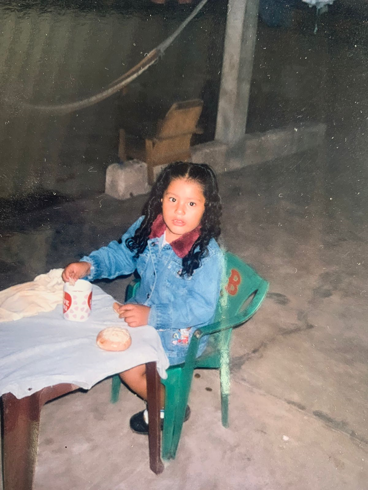
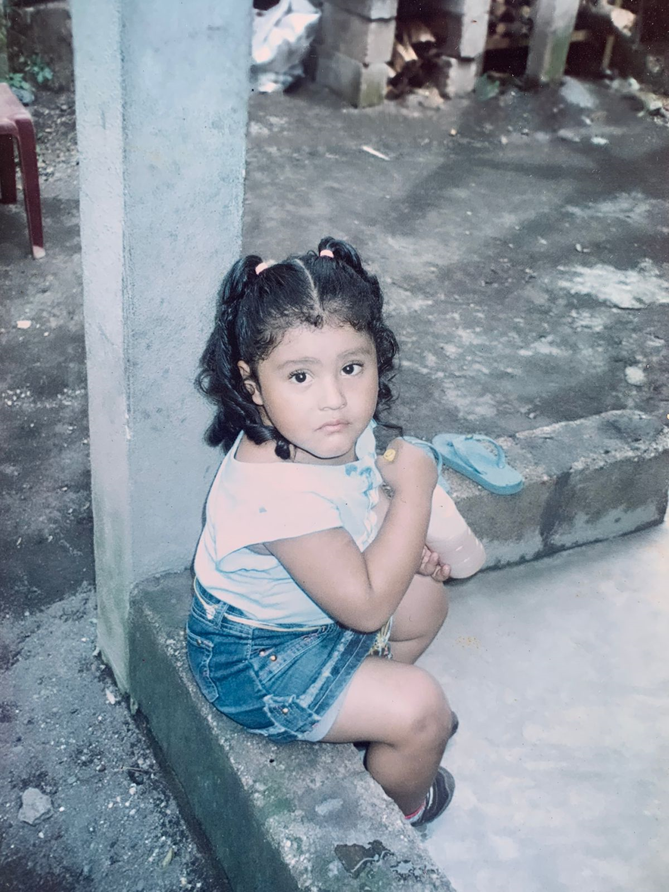
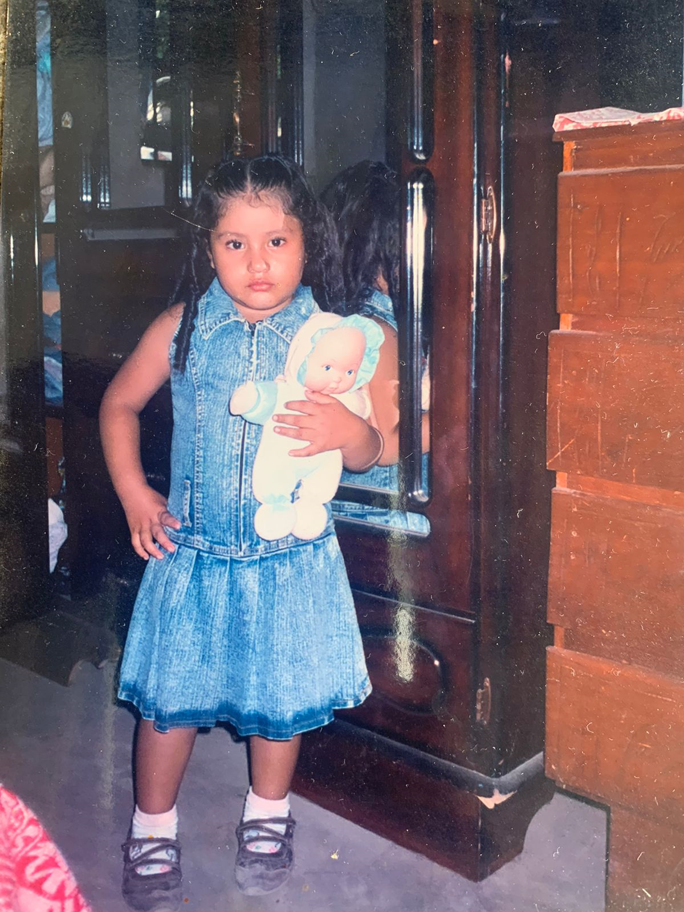
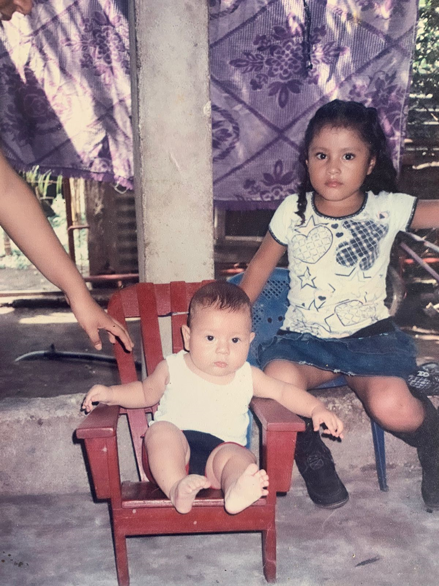
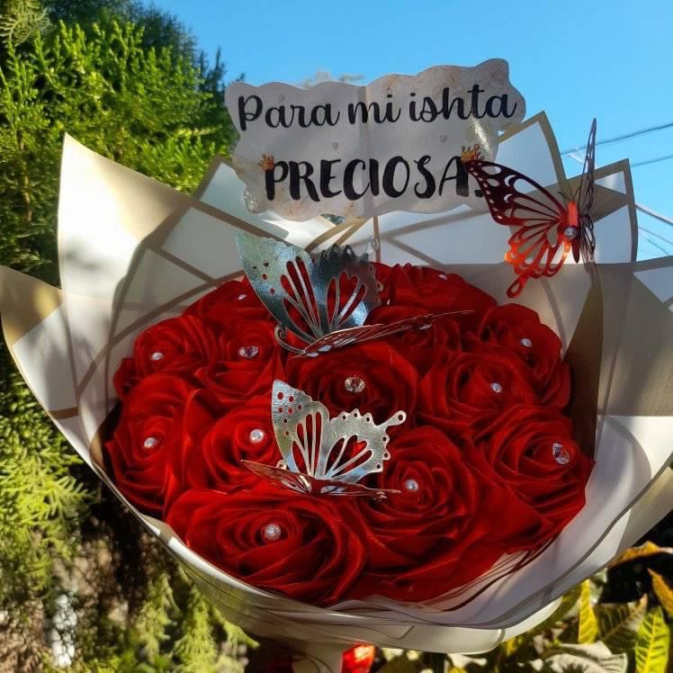
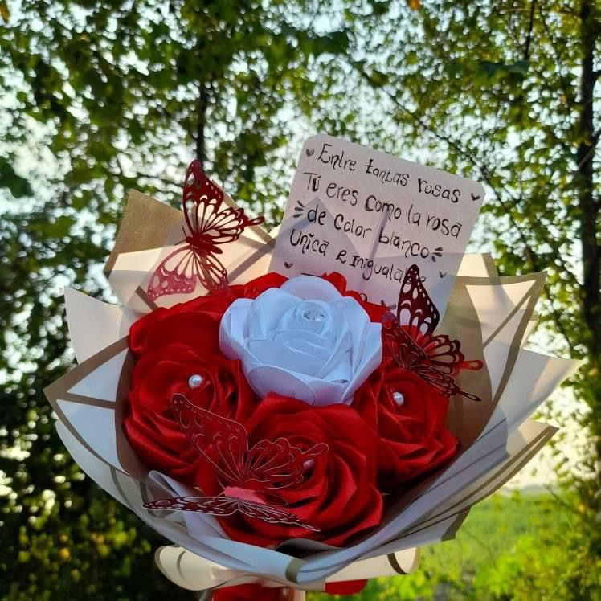
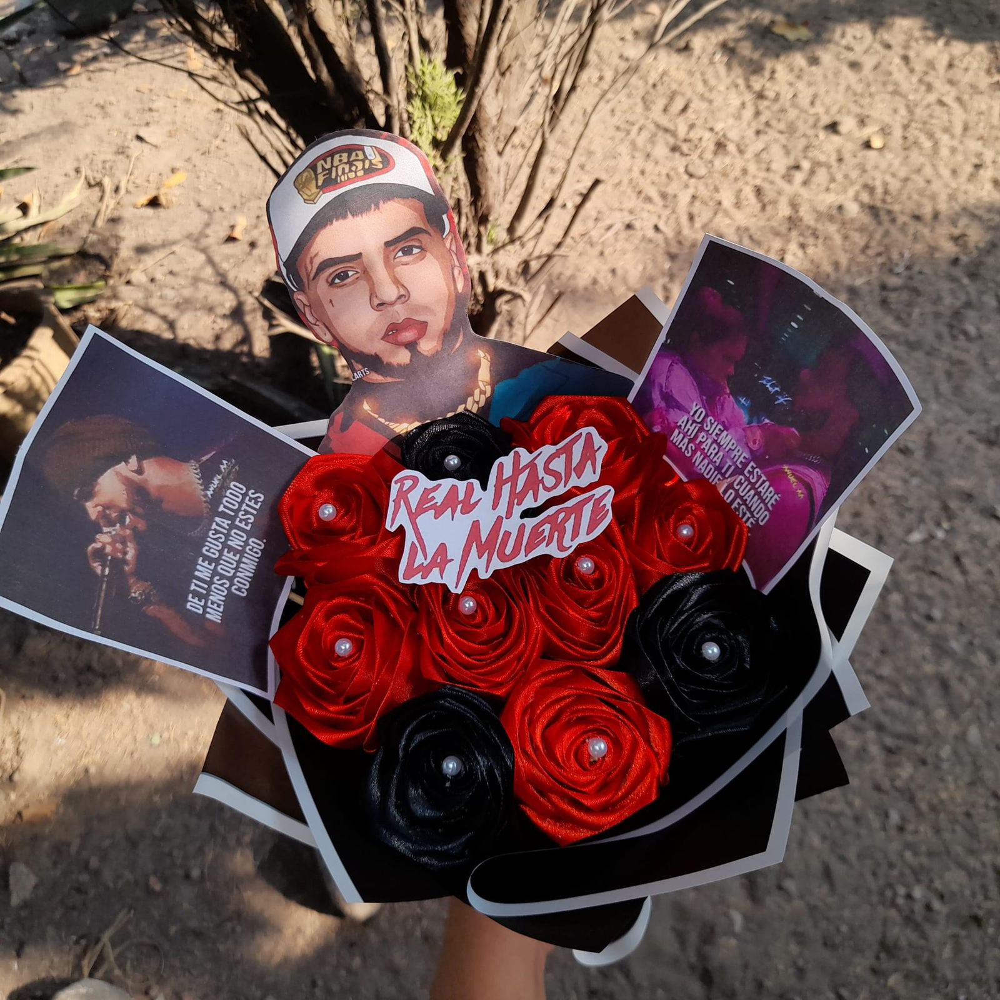
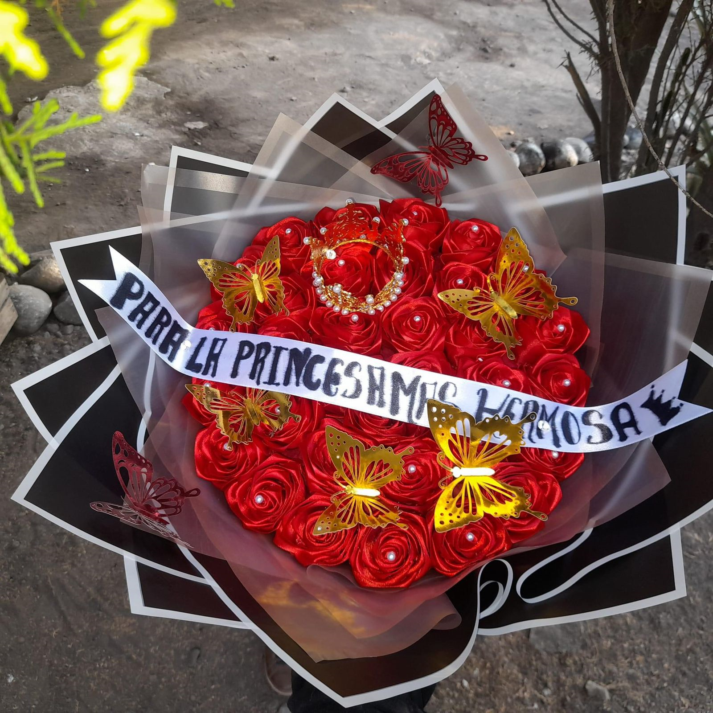

Karen Pensamiento :)
enlace2 enlace3 enlace4 enlace5HOLA :) bienvenidos a mi primera pagina web donde conoceras un poco sobre mi.
Mi nombre es KAREN JEANITZI TUJ PENSAMIENTO
Tengo 18 años estudio acutalmente la carrera de ingenieria en sistemas en la universidad Mariano Malvez de Guatemala tranbajo en Agencias Maldonado de operadora de serigrafia.
vivo con mis padres tengo dos hermanos de los cuales yo soy la mayor,me gusta mucho el deporte y hacer manualidades tiempo a tras me dedicava hacer muchas cosas de arreglos sorpresas
en mi niñes siempre mis abuelitos estavan con nosotros siempre nos enseñaban el bien mi madre por una parte nos empezo a enseñar que debiamos ser aplicados en el estudio y siempre lo eramos.
   
Mi pasatiempo favorito :) amo realizar estos areglos con rosas eternas son unas de las cosas que mas se me dan.
   soy fan de cristiano Ronaldo

soy una persona responsable dedicada en lo que realizo me gusta siempre hacer las cosas bien mas a futuro deseo obtener mi titulo de ingeniera postular a un mejor trabajo y poder viajar a muchos lugares a los que siempre he soñado
"La vida es un 10% lo que te sucede y un 90% de cómo reaccionas a ello". Charles R. Swindoll.
siempre disfruto la vida siendo yo misma y tengo claro que quiero llegar muy lejos asi que siempre digo esfuerzate y se valiente :)